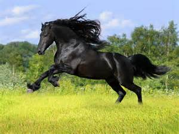

|
|
|
第十章 オルゲルーゼ
ガヴァーンはシャンプファンツーンを離れ、聖杯を探す旅を始めていた。聖杯を求める者は、その栄誉に近づくために、剣をふるって戦いを繰り返さなければならない、という定めがあった。ガヴァーンは、いつ襲ってくるかわからない戦いに気をひきしめて、馬を進めていた。
草原にさしかかったところに、婦人用の馬具をつけた馬がつながれていた。ガヴァーンが近づいてみると、樹木の下に楯がおかれていて、槍で突かれた穴があいていた。樹木の向こう側のクローバーの草地の上に、一人の女性がすわっていた。女性はひざの上に騎士を抱いて、悲しみにくれていた。騎士の体には槍が刺さっていた。
ガヴァーンは馬から下りて尋ねた。
「どうなされたのですか。」
「戦いで、この方に槍がささったのです。」
ガヴァーンは重ねて聞いた。
「その騎士は、まだ生きているのか、それとも死んでいるのですか。」
「まだ命はありますが、そう長くはないと思います。あなたにお会いできたのは、神の恵みです。どうか助けてください。」
ガヴァーンはこの女性のために、騎士を助けようと思った。
「わかりました。この騎士を助けましょう。」
「ありがとうございます。」
ガヴァーンは傷の様子を見て言った。
「大丈夫です。この傷は致命傷ではありません。」
ガヴァーンは菩提樹の小枝の樹皮をストローのように使い、余分にたまった血を吸いだした。ガヴァーンは傷の手当について知識があったので、治療は滞りなくすんだ。騎士は見る見るうちに生気をとりもどし、話ができるようになった。騎士はガヴァーンを見上げ、感謝の言葉を述べた。
「助けてくださって、ありがとうございます。あなたは称賛に値するお方です。このことは、あなたの栄誉にもなる立派な行いです。」
ガヴァーンは聞いた。
「なぜ、こんなことになったのだ。」
「リショイスにやられたのです。ローグロイス城の前で一騎討ちをするために来たのですが、こんな不覚をとるとは思いませんでした。リショイスは大変強い騎士でした。やつの槍の一撃は、私の楯を突きぬけて、私の体にささったのです。馬から落ちた私を、この女性が助けてくれました。」
ガヴァーンは言った。
「リショイスは、どうしてこんなことをしたのだろうか。ローグロイス城に行って、聞きださなければならない。腑に落ちないことがあったら、あなたのかたきを取ってやろう。」
「それはやめたほうがいいです。あの男は強靭な男です。」
倒れている騎士は、そう言ってガヴァーンを止めようとしたが、ガヴァーンは言うことを聞かなかった。
「戦いは私の定めだ。」
ガヴァーンはそう言って、傷口の手当てを終え、ローグロイス城へ向かっていった。
ローグロイス城は小高い山の上にあり、見事な景観を見せていた。山肌にはらせん状の道が通っていて、遠目から見ると、傾斜する道と道の間が均等幅で平行に走っているので、山全体がまるで、こまが回っているかのような錯覚をおこす。山のふもとにはイチジク、ザクロ、オリーブなどの果樹園がある。果樹園の脇にある泉のそばに、女性が一人立っていた。その女性はバラと百合とランの花の統合のようであり、この世のものとは思えない美しさは、コンドヴィーラームールスを彷彿とさせるものがあった。優雅な振る舞いを見せるこの女性は、ローグロイスのオルゲルーゼと言った。
ガヴァーンはオルゲルーゼに挨拶をした。
「あなたの許しをえて馬をおり、そばに近づかせていただけるなら、この上ない喜びでございます。あなたほど美しい女性に会ったことはなく、私は一生あなたを思いつづけることでしょう。」
すると、オルゲルーゼは第一声からトゲのある口調で反感を示した。
「もう結構です。そんなことは言われなくてもわかっています。ほめるのはいい加減にしてください。いくらほめられても、何の得もありません。
私は思慮深い方々の称賛だけがいただきたいのです。どうぞ、おひきとりください。あなたは私の眼中にありません。それでも私の愛がほしいですか。泥をかぶって、とっとと退散するのが落ちですよ。」
ガヴァーンは相手の機嫌を損ねないように、自分の思いを言った。
「あなたのおっしゃる通りかもしれません。
でも、私はあなたのとりこになりました。どうか、愛の楽しみを与えてください。」
オルゲルーゼはガヴァーンの穏やかで紳士的な態度に少し安堵はしたものの、相変わらず高慢な態度で言った。
「あなたが私のために戦いを引き受けてくださるかどうかが知りたいのです。名誉を惜しむ気持ちがあるなら、止めておきなさい。どうぞ他の女性を探してください。私と一緒にいても、災難にあうだけですよ。」
ガヴァーンは一歩も引かずにまっすぐに言った。
「どんな戦いでも、お引き受けいたします。あなたから愛をいただくためには、あなたにお仕えしなければなりません。」
オルゲルーゼは、この騎士が本当に自分に心服しているのか、試そうと思った。
「私に仕えるつもりなら、戦いの日々を送ることになりますよ。それでもよろしければ、まず、私の馬を連れてきてください。
そこの果樹園を通って向こう側に行くと、歌ったり踊ったりしている人たちがいます。その人たちが何か言うかもしれませんが、かまわずに通りぬけて、私の馬のところに行ってください。そして手綱をほどいて馬を連れてきてください。」
ガヴァーンは馬から下り、馬をつなぐ場所を探したが、見当たらない。目の前の女性に頼むわけにもいかないし、と思っていると、オルゲルーゼが言った。
「何を困っているのか、わかってますよ。馬はここにおいていきなさい。手綱をもっていてあげましょう。」
ガヴァーンはオルゲルーゼに手綱を渡そうとした。
「では、これをお願いします。」
「あら、ずいぶんと失礼なことをなさいますわね。あなたがさわったところを、もつわけにはいきませんのよ。」
ガヴァーンはどんなにとがめられても、恋焦がれている相手にはしたがわなければならず、気にせずに手綱の先のほうをさし出した。
「こちらの先のほうは、さわっていません。」
「では、そこをもちましょう。早く私の馬を連れてきてください。あなたと旅に出ることにしたのですから。」
ガヴァーンは、しめたと思った。オルゲルーゼと一緒に時を過ごすことができると思い、浮かれた気分になり、そそくさと果樹園の方へ歩いていった。
果樹園を抜けたところに大勢の人がいた。ガヴァーンがその人たちの間を通りぬけていくと、彼らはガヴァーンを見て憐れんだ。
「私たちの主人は人をだますことなんか、平気でする残酷な人だ。この方も主人の言いなりになるんだろうね。かわいそうに。」
このような声があちこちから聞こえてきたが、ガヴァーンは気にもとめずに人たちの間を通りぬけていった。すぐ先にオリーブの木があり、そこに馬がつながれていたので、ガヴァーンはすぐに馬の手綱をほどいた。
そのすぐそばに白髪の老人が立っていて、ガヴァーンに言った。
「ここでは、誰もあなたの邪魔はしません。ですが、馬をおいていった方が身のためです。これまでに多くの騎士が主人の言いなりになって命を落しました。私どもの主人は、本当にひどい方なのです。」
老人の言うことにしたがう理由は、ガヴァーンにはない。馬を連れていかなければ、オルゲルーゼの愛は得られないのだから。
「馬をここに残していくわけにはいかない。」
ガヴァーンはそう言って、白髪の老人に別れを告げた。
ガヴァーンが戻ってくると、オルゲルーゼは、さっそく悪態をついた。
「お帰りなさい。お馬鹿さん。私にお仕えになられるようですが、そんな愚かなことはやめておいたほうがいいですよ。」
ガヴァーンは面食らって言った。
「突然のご立腹のようですが、その償いとして、やさしい態度をしていただけるまで、あなたのそばで、お仕えしたいと思います。さぁ、手伝いますので、馬にお乗りください。」
「そんなことを頼んだ覚えはありません。あなたのいやらしい手など借りたくありません。」
オルゲルーゼは大地をけって、馬に飛びのった。
ガヴァーンはその勇ましい姿を見て感心していると、オルゲルーゼはけしかけるように言った。
「さっさと先頭に立って、馬を進めてちょうだい。神があなたを殺してしまうがいい。」
ガヴァーンはオルゲルーゼの先頭に立って馬を進めた。
二人が花咲く野原に来たとき、ガヴァーンは薬草を見つけたので、馬から下りて、薬草の葉をつんだ。
「この草は傷口に効くのです。」
オルゲルーゼはガヴァーンの説明を聞いて、その豊富な知識に反発し、見下げるように言った。
「ここにいる私の騎士は、お医者さんでもやっているほうがいいわ。箱に薬草をつめて売り歩けば、十分、日銭はかせげるわね。」
ガヴァーンは弁解して言った。
「先ほど、負傷した騎士に出会ったので、この薬草で手当てをしてあげようと思ったのです。」
「それでは、ぜひそれを拝見させていただきたいです。」
しばらくして、オルゲルーゼの小姓が二人の後を追いかけてきた。小姓の名はマルクレと言い、魔女クンドリーエの弟だ。クンドリーエの弟であるだけに、容貌もクンドリーエそっくりで、およそ人間とは思えない姿をしていた。体中が毛むくじゃらで、鼻と口は狼のように突きでていて、二本の犬歯は牙のように伸びていた。髪の毛は短く、ハリネズミのように硬く、とがっていた。
マルクレとクンドリーエがこのように醜く生まれたことには理由があった。
遠い過去に、あらゆることを見通すことのできる民族がいた。その民族は惑星の運行から植物の性質と効能を調べることができた。根野菜の中には強い力を持っているものがあるため、その民族の少女たちに対して、一部の根野菜を食べることを禁じた。しかし、少女たちは根野菜のおいしさを知っていたので、食べずに我慢していることができずに、禁止を破って食べてしまったのである。心の弱さに負けて、欲望をそのままに放出してしまったために、その後、マルクレやクンドリーエのような子どもが生まれるようになってしまったのである。
マルクレとクンドリーエは、もともとゼクンディルレの王国に住んでいた。ゼクンディルレの国は、大量の宝石を産出する富裕な国であった。ゼクンディルレはフェイレフィースの妻になった女性であるが、宝石に対する目が高く、ある時、聖杯の話を耳にしたので、どんな宝石よりも美しく、不思議な力がそなわった石に興味を持ったのだ。ゼクンディルレはマルクレとクンドリーエに、たくさんの宝石をもたせて、聖杯について詳しい話を聞いてくるように命じ、ムンサルヴェーシュのアンフォルタスのもとに使いに出した。
二人の訪問を受けたアンフォルタスは、その異様な容姿に驚きながらも、情けをかけて、いろいろなことを教えた。醜い容姿とは異なり、二人の心が純粋で美しかったので、アンフォルタスは二人を憐れんで、ゼクンディルレの国に帰さずに、クンドリーエをムンサルヴェーシュの城に引き取り、マルクレをローグロイスのオルゲルーゼのもとに騎士の見習いとして送りだしたのだ。
さて、マルクレはやせこけた駄馬に乗って、ガヴァーンに追いつき、大声で叫んだ。
「殿、私の主人をお連れになるのは、やめたほうがいいぜ。ひどい目に合うぞ。あんたじゃだめなんです。棒でたたかれて打ちのめされて、みっともない姿になっちまうから、どうか一緒に行くのはおやめなされ。」
ガヴァーンはこれを聞いて、女王の口が悪いと、家来も同じようになるものなのかと思った。
「私はそんなみじめな目にあったことはない。悪態をつくのもいい加減にしろ。」
ガヴァーンはそう言うが早いか、マルクレの頭をつかんで馬上から地面に放りなげた。マルクレは地面にたたきつけられた。ガヴァーンを上目づかいに見て、恐ろしい者に出会ったかのような顔をしていた。しかし、マルクレを投げとばしたガヴァーンも痛い目にあった。マルクレの髪の毛が硬くとがっていて、ガヴァーンの指に突きささったのだ。ガヴァーンは指から血を流していた。
これを見ていたオルゲルーゼは笑って言った。
「あなたたちがそうやって、やりあっているのを見るのはおもしろいわ。」
しばらくして、先ほど出会った騎士がいる場所にやってきた。ガヴァーンは薬草を取りだし、騎士の傷口に巻きつけてやった。
手当てを受けた騎士は、オルゲルーゼが一緒にいるのを見て、忠告した。
「その女と一緒にいるのですか。その女のせいで、俺はこうなったのです。俺をだまして一騎討ちをするように仕向けたのです。その女と一緒にいることは、おすすめしません。」
ガヴァーンは、よけいなお世話だと言わんばかりに、
「こればかりは、君の意見にしたがうわけにはいかない。」と言った。
「勝手にするがいい。痛い目に合いますよ。それよりも、ちょっと手伝ってくれませんか。」
「私にできることなら。」
「この近くに治療所があるので、そこに行きたいのですが、自分では馬に乗ることができないのです。そこに妻の馬があるので、まず妻を馬に乗せたら、その後ろに俺を乗せてください。」
さっそくガヴァーンは言われた通りに、夫人の馬の手綱を木からほどいて、馬を夫人のそばに連れてきた。すると負傷した騎士は言った。
「あぶないから、もう少し先へ行ってくれないか。」
騎士はそう言って、ガヴァーンを自分から離れた位置へ追いやった。
ガヴァーンはゆっくりと馬の位置をずらし、夫人を馬に乗せた。するとそのすきに、負傷した騎士は飛びおきて、ガヴァーンの馬に飛びのり、そのまま逃げてしまった。ガヴァーンは遠く走り去っていく二頭の人馬を見つめて呆然とした。
ガヴァーンは馬を盗まれたのだ。そうと分かると、猛然と怒りだした。オルゲルーゼはその様子を見て高笑いをした。
「あなたは最初は騎士でしたが、次に医者になり、最後は小姓になってしまいましたね。そんなご身分でも、まだ私の愛がお望みですか。」
「あなたの愛が得られるなら、他に勝るものはございません。諸国の財宝すべてと比べても、私はあなたを選ぶでしょう。あなたの愛だけがほしいのです。
私はあなたから何を言われても大丈夫です。しかし、人を嘲笑したり、侮辱したりすることで、あなたは自分の栄誉を傷つけていらっしゃるのですよ。」
オルゲルーゼは黙っていた。
ガヴァーンはマルクレのやせた駄馬に乗った。戦いに向かうにはあまりにも貧弱で役に立たない馬だったが、かわりはこの馬しかいなかった。マルクレは歩いて城に帰っていった。
ガヴァーンはやせ細った馬をよく見て、調べた。馬は戦いに使うにはあまりにも貧弱で、とてもではないが、このまま乗っていることはできないと思い、馬からおりた。
オルゲルーゼは、ガヴァーンが徒歩でもついて来るのかどうか、からかうように尋ねた。
「さあ、どうなさいますか。」
ガヴァーンは答えた。
「あなたにお仕えしているのですから、あなたの指図にしたがいます。」
「あなたは馬鹿ね。もう馬はいないのですから、いい加減におやめにならないと、悲劇が悲劇を呼びますよ。」
「私の胸の中で、あなたへの愛が燃えあがり、あなたに仕えるように言っています。馬で行くか、徒歩で行くかは問題ではありません。」
ガヴァーンは徒歩で行くことにし、馬を引いて歩きはじめた。
楯と槍を馬にくくりつけ、馬を引いている姿はまるで商人のようで、見られたものではなかった。オルゲルーゼはこれを見て笑ったが、ガヴァーンは気にしなかった。ガヴァーンにとっては、オルゲルーゼの笑いや嘲笑さえも、恋しいものであり、何を言われても彼女と一緒にいることが喜びだった。
ひどく踏みあらされた広い道を通っていくと、大きな川が見えてきた。二人は川のほうへ行き、渡し場に向かっていくと、後方から騎士が近づいてきた。オルゲルーゼは言った。
「あなたに終わりの時が近づいてきましたよ。後ろからやってくる男は、あなたを打ちのめすでしょう。戦えるものなら戦ってごらんなさい。きっとひどい目にあうでしょう。逃げるなら早く逃げなさい。」
オルゲルーゼは川の渡し場に行き、渡し守を呼んだ。渡し守が舟で近づいてくると、オルゲルーゼは舟に飛び乗った。
「舟の中までついてきてはいけません。」
ガヴァーンはあわてて尋ねた。
「もう行ってしまうのですか。もう会えないのですか。」
「リショイスと戦って、勝利の誉れを手に入れたら、もう一度会ってあげましょう。でも、きっと無理だと思いますけど。」
そのとき、馬に乗ったリショイスが、ものすごい勢いでやってきた。
ガヴァーンは思った。
「徒歩で戦うか、馬上で戦うか。
自分の駄馬は、相手の攻撃を受けたら、すぐに倒れてしまうだろう。しかし、そうなれば相手の馬も、このやせ馬につまずいて倒れるだろう。」
ガヴァーンはやせ馬に乗ることに決めて、相手の攻撃に備えた。
一騎討ちはガヴァーンの予想通りになった。両者とも馬から落ちて、地面に放りだされた。二人は立ちあがって剣で戦い、激しく打ち合った。兜がうなりをあげ、火花が飛びちった。二人は広い野原で戦いつづけた。両者ともに腕っぷしが強かったが、やがて長く続いた打ち合いに疲れてきた。
ガヴァーンはレスリングを得意としていたので、相手の剣の下をかいくぐり、両腕をつかんで押し倒した。そしてついにリショイスを押さえこんでしまった。ガヴァーンは言った。
「命が惜しければ、忠誠の誓いをするがいい。」
しかし、リショイスはガヴァーンの要求にしたがわなかった。彼はこれまでに忠誠の誓いをしたことがなかったのだ。
「忠誠の誓いをして敗北を認めるくらいなら。死んだほうがましだ。殺してくれ。これまでの俺の栄誉はすべてお前にくれてやろう。」
ガヴァーンは忠誠の誓いをするように何度も問いつめたが、リショイスの意思は変わらなかった。ガヴァーンは思った。
「どうしてこの若い男を殺さねばならないのだろうか。まだ若すぎる。命を助けてやろう。」
ガヴァーンは結局、忠誠の誓いをさせずに、相手を草の上にすわらせてやった。
そこでしばらく休息しようと思ったとき、二頭の馬がガヴァーンの目に入った。相手の立派な馬と自分のやせ細った馬である。ガヴァーンは忠誠の誓いを得られなかったので、せめて戦利品に、馬をもらおうと思った。その立派な馬に近づいてみると、何とその馬は、先ほど負傷した騎士に盗まれた馬だった。ガヴァーンは嬉しくなった。立派な馬が戻ってきて、すっきりとした気持ちになった。それだけではなかった。馬の前足の上部に焼印があった。その焼印はきじ鳩の紋章で、聖杯のしるしだった。ガヴァーンは聖杯探しをしていることを思い出した。愛を求める旅の途中ではあったが、聖杯とのつながりを感じ、聖杯に一歩、近づいた気がした。
そこへ川の渡し守が、舟から岸にあがってきて、ガヴァーンに言った。
「勝利の栄誉を勝ちとられましたことを、お喜びいたします。
ところで、この野原では戦いの際の使用料として、負けた方の馬をいただくことになっています。今、あなた様の横にいる馬をいただきたいのですが。」
ガヴァーンは答えた。
「使用料を取りたてるなら、あの男に払わせるのが筋道だろう。ほら、そこに馬がいる。やせ細った馬だ。それを納めていただきたい。この立派な馬は私のものだ。今日の午前中には私が乗っていたものなので、これをさしあげるわけにはいかない。」
渡し守は二頭の馬を見くらべて、その違いがあまりにもひどいので困った顔をした。
「あのようなやせた老馬をもらっても、一銭にもなりません。」
ガヴァーンは少し考えてから言った。
「あの馬が気に入らなければ、馬のかわりにあの若い騎士を連れていくがいい。名はリショイスというらしい。」
渡し守は口もとをほころばせて喜んだ。
「本当ですか。こんなに高価なものをいただいたことはございません。これは私の請求額をはるかに超えたものですから、少々ためらってしまいます。」
「気にすることはない。」
渡し守は、少し考えてから言った。
「それでは、こうしましょう。今晩私の館に泊まっていただいて、おもてなしをいたしますので、わずかなものではございますが、それでお返しにさせていただきたいと思います。」
ガヴァーンは即答した。
「よかろう。こちらこそ、相当に疲れているところだから、ぜひ、お世話になって体を休めたい。
それにしても、私が愛する人はどこへ行ってしまったのだ。愛を求めて戦っても愛は得られず、命がけの戦いをしても、何の意味もない。苦しい思いだけがつのっていく。何という旅なのだ。」
渡し守はうなずいてから、同情するように言った。
「これがこの国の習いなのです。この辺り一帯はクリンショル様が支配しておられ、私どもの自由は制限されています。ここは幸せとはほど遠い摩訶不思議な国なのです。ただ、勇気ある人だけは、幸運の助けに恵まれることがあります。さあ、行きましょう。急いで舟にお乗りください。」
ガヴァーンはリショイスを舟に乗せた。リショイスは逆らわずに、不遇の身に耐えていた。

|
|
|